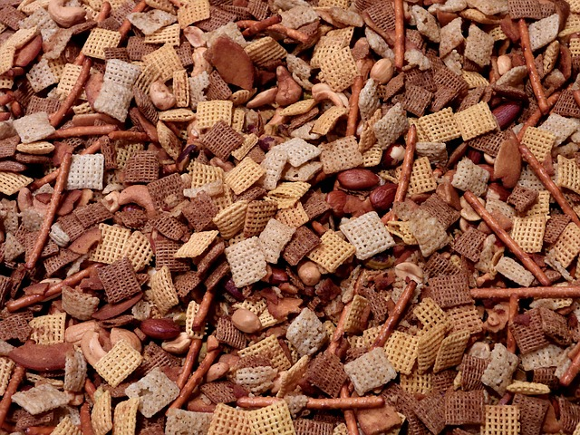

Microwave "TV" Mix

Description
Behold, my grandfather's absolutely addictive Chex mix recipe! Poppa always made his
mix in a bowl in the microwave. Unfortunately, I haven't been successful so far replicating this in the
microwave, so I'm going to include oven instructions as well.
Ingredients
- 2 cups Rice Chex
- 2 cups Wheat Chex
- 2 cups Corn Chex
- 2 cups Crispix
- 3 cups pretzel sticks
- 2 cups Cheez-its
- 2 cups mixed nuts
- 1 1/4 teaspoon seasoning salt
- 3/4 teaspoon celery salt
- 3/4 teaspoon garlic salt
- 3/4 teaspoon chili powder
- 1 tablespoon soy sauce
- 1 tablespoon Worcestershire sauce
- 1/4 pound (or one stick) of butter (melted)
Steps
Microwave Instructions
- Combine ingredients in a microwave-safe bowl.
- Cook for 6 minutes on full power.
- Stir every 2 minutes.
- Spread to cool.
Oven Instructions
- Mix Chex and nuts and spread out in large roasting pan.
- Melt butter and add seasoning and sauces. Pour over chex and nuts evenly and mix thoroughly.
- Heat in a 275 degree Fahrenheit oven for 1 hour, stirring Chex evenly every 15 minutes and bringing
the bottom layer to the top.
- After removing from the oven, spread the chex in a single layer on paper towels to cool.
Home